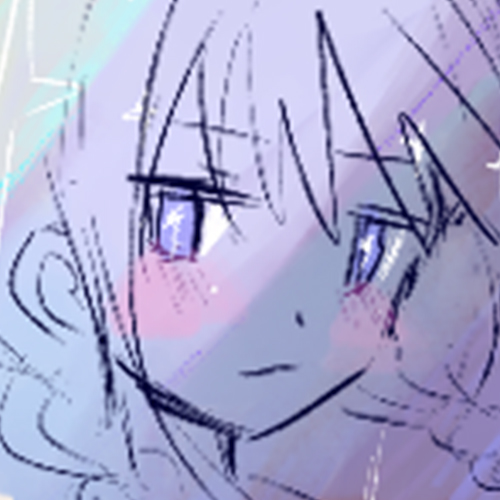

佐藤 杏南 / sato anna

profile
2002年 福島県生まれ。
2024年 福島大学理工学群共生システム理工学類 卒業。
2026年 情報科学芸術大学院大学[IAMAS]メディア表現研究科 博士前期課程
在学中。
プログラミングと数学を学ぶために大学に進学し、グラフ描画のアルゴリズムの研究をして卒業しました。
また、教育についても関心があり、数学と情報の高等学校教諭普通免許状を取得しました。
その後、遊べるXRの教材を作りたいと考え、IAMASに進学しました。
1年次はARを使った”遊び”の制作をしましたが、自分らしいテーマを模索する中で「”キャラ”を抜け出す」というテーマに興味を持ち、2年次はARのアバターや肉体を使ったパフォーマンスをいくつか実践しました。
修士作品では、《かわいいかくれんぼ》というパフォーマンスを発表しました。
この作品では、「リアルな身体」と「キャラ化した身体」をテーマに、２つの身体を往復する中で生じる「滑稽さ」に着目しました。
そして、長時間同じ動きを反復するパフォーマンスを行い、リアルな身体が背負う疲労や執着を顕わにすることを試みました。
また、個人的な取り組みとして、日常的に発見し積み重なっていく「私が好きなもの」をエッセイ、WEB、イラストなどで表現しています。
mind
”遊び心”を取り入れることを心がけています。
”遊び心”とは、みた人・触れた本人が「なんか惹かれる」という「妙さ」を生み出すためのちょっとしたスパイスだと考えています。
デザインや表現が洗練された作品はとても魅力的ですが、私はそれだけではなく、人の創造性を刺激したり、事象と無関係な立場でいられなくなるような作品が、人の心を豊かにすると思います。
そのため、親しみやすさで共感を生み出すことをベースにしつつ、どうにかして違和感を生み出したり、現実と虚構を混ぜたりする”遊び”をたびたび実践してきました。
future
これからも、私自身が日々”遊び心”を持って小さな発見を繰り返し、自分が感じた「妙さ」に対して「なんで魅力的に感じるんだろう」ということを絶えず問いかけていきたいです。 そして、自分の感性を豊かにしながら、ビジュアルを考える力だけでなく、それを実現するコーディングや実装の力もさらに伸ばしたいです。
contact
anfumian8982@gmail.com